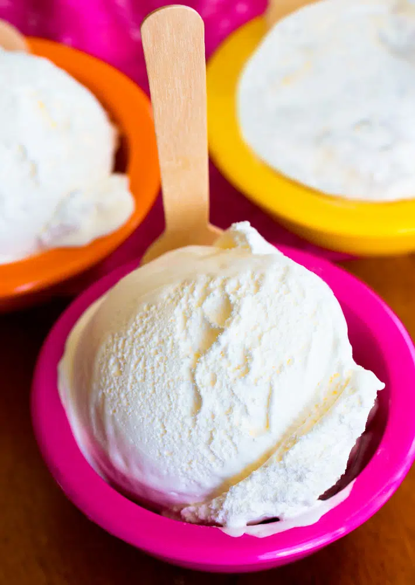

Frozen Yogurt

Frozen yogurt so creamy you'll be coughing up phlegm for days!
The best part about this healthy frozen treat is how simple it is to make. Kids and adults all love getting to choose what ingredients they want to swirl into the thick and creamy vanilla base. Turn it into chocolate frozen yogurt, or strawberry, or peanut butter, coconut, mango, coffee, blueberry, cotton candy, birthday cake batter…
Ingredients:
- 2 cups yogurt of choice
- 1/4 cup sweetener of choice
- Add-ins or toppings of choice (see above for ideas)
- Ice cream machine
Steps:
- Whisk ingredients together (If you want sweet froyo as opposed to tart, increase sweetener to 1/3 cup)
- Pour the mix into the ice cream machine and process according to your machine’s directions. (If you don’t have an ice cream machine, see other preparation options listed above in this post)
Special Tip:
Store in an airtight container for up to a month.